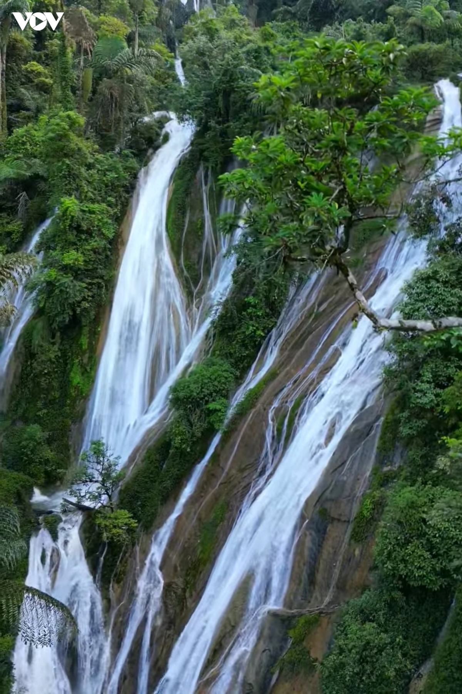
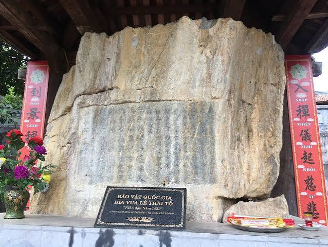
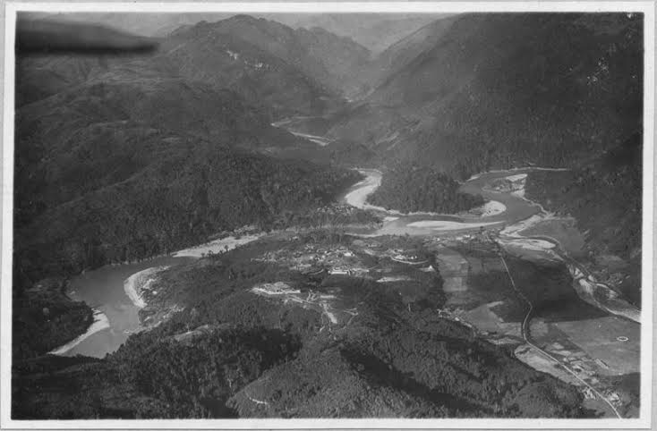

01
DẤU TÍCH TIỀN SỬ
Những dấu chân đầu tiên
Các di chỉ khảo cổ Nậm Tun, Nậm Phé ở khu vực Phong Thổ góp phần hé mở câu chuyện về sự hiện diện lâu đời của con người trên mảnh đất Lai Châu.
CHẠM VÀO MIỀN TÂY BẮC
Nơi hội tụ những đỉnh mây ngàn, sắc hoa đỗ quyên đại ngàn và bản sắc văn hóa độc đáo.
Khám phá ngayLỜI CHÀO TỪ LAI CHÂU
Nằm ở vùng Tây Bắc của Tổ quốc, Lai Châu níu chân người bởi những dãy núi trùng điệp, biển mây bồng bềnh và nhịp sống bình dị nơi bản làng. Mỗi cung đường là một khung cảnh mới; mỗi cuộc gặp gỡ là một câu chuyện về con người và văn hóa nơi đây.
Từ những phiên chợ rực rỡ sắc màu đến hương vị món ăn núi rừng, Lai Châu luôn có cách riêng để khiến hành trình khám phá trở nên đáng nhớ.
Tìm hiểu câu chuyện Lai ChâuDẤU ẤN THỜI GIAN
Từ những dấu tích xa xưa đến một Lai Châu đang vươn mình phát triển.

01Các di chỉ khảo cổ Nậm Tun, Nậm Phé ở khu vực Phong Thổ góp phần hé mở câu chuyện về sự hiện diện lâu đời của con người trên mảnh đất Lai Châu.

02Bia Lê Lợi (Lê Thái Tổ) có niên đại năm 1431, gắn với dấu ấn lịch sử của nhà Lê ở vùng Tây Bắc. Tấm bia được công nhận là Bảo vật quốc gia.

03Ngày 28 tháng 6 năm 1909, tỉnh Lai Châu được thành lập, đánh dấu một mốc quan trọng trong lịch sử hành chính của vùng Tây Bắc.
 04
04
Trên hành trình đổi mới, Lai Châu từng bước phát triển hạ tầng, du lịch và đời sống cộng đồng, đồng thời gìn giữ những giá trị văn hóa đặc sắc.